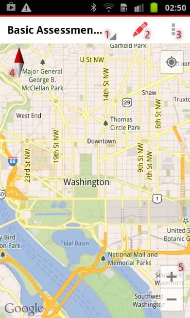
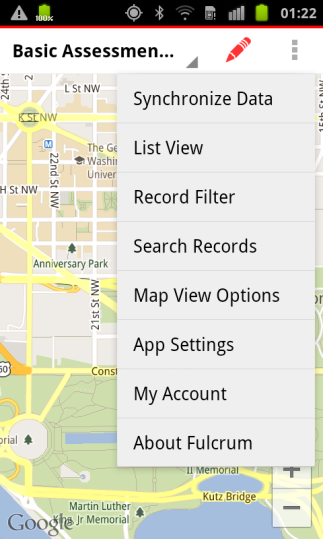
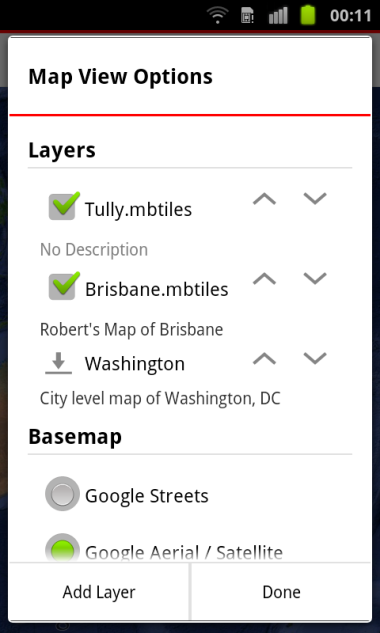
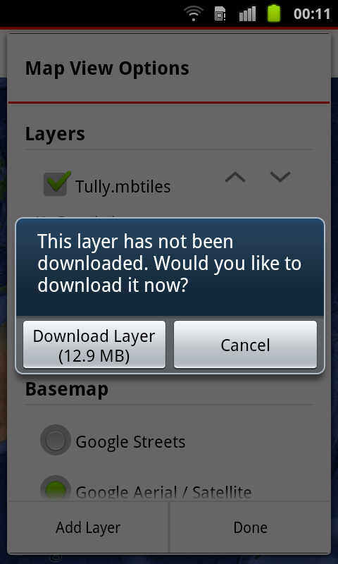
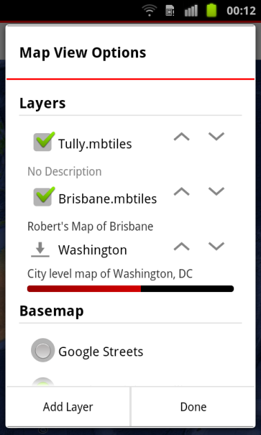
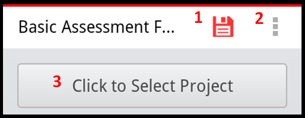

Collecting Data on Fulcrum Mobile
 Fulcrum is a mobile data collection platform for survey data. Fulcrum pulls surveys created via an online interface to smartphones or tablets for offline collection in the field. Survey managers push collected data back up to internet database, where Quality and Learning (Q&L) staff can analyze, correct and download survey data in near real time.
Fulcrum is a mobile data collection platform for survey data. Fulcrum pulls surveys created via an online interface to smartphones or tablets for offline collection in the field. Survey managers push collected data back up to internet database, where Quality and Learning (Q&L) staff can analyze, correct and download survey data in near real time.
Android Basics
Main Buttons
- Settings
- Home screen: phone settings
- Fulcrum screen: preferences list
- Survey screen: survey options
- Home
- Returns to the phone home screen
- Use when you're completely lost, it doesn't delete your work
- Back
- Returns to the previous screen
- Removes a pop-up or the keyboard
- Use when you're lost until you find a screen you're familiar with
- Power
- Pressing for a long time turns the phone on or off
- Warning: This will erase uncompleted surveys!
- To lock the screen, press and release quickly
- To unlock the screen, press quickly again and slide the screen in any direction
- Pressing for a long time turns the phone on or off
Long Tap vs. Short Tap
Long Tap
- Press and hold
- Move objects in the home screen
- Opens options for the selected object, such as deleting it
- If from one direction to another without a selection, moves the screen view (more details in the next section: Screen Movement)
Short Tap
- Touch the screen quickly
- Open application or select something
- The most common action
Screen Movement
- Up -> Down: the screen moves to the upper section
- Down -> Up: the screen moves to the lower section
- Left -> Right: moves to the left screen
- Right -> Left: moves to the right screen
Tip: Imagine you are moving a piece of paper around with your hand. To read the bottom of the page you would slide the paper further up. To read the top of the page you would slife the paper further down. And so on.
Fulcrum Mobile Application
App Main Screen
The main screen shows a Google background map when internet connectivity is available and a point representing your location when GPS signal is available. The top bar contains the Main Menu where you can: Choose a saved form (#1); Open new form (#2) and; options (#3), can also be configured by pressing the Settings button. If the orientation of your map changes, you can press the north arrow (#4) to reset the map direction. Also on the map view, you can zoom-in or zoom-out using the zoom buttons (#5). Change the background map by going to the list of options (button #3 or Settings Button) and selecting “Map View Options”.
Background Maps
Offline maps are available in the layer section. During a survey, you will rarely have internet connection, offline maps are essential. Beforehand, on Mobile Atlas Creator, Tile Mill or similar software, create and import to the Fulcrum server. It covers a limited area and only has some zoom levels available. A green checkbox identifies the active map. When connected to the internet, go to the Basemap section and choose the best basemap provider for your purposes.
   
If your offline map doesn’t appear in this screen, your application is not currently synchronized with the server. If this is the case and you have internet connection, go back to the main menu, and select “Synchronize Data”. Wait for the synchronization to finish and you will be able to see your map in the Map View Options page. Your map should appear with the sign, showing that it’s available to download. Simply click it, and a message will pop-up asking if you want to download the layer now. Hit “Download Layer” and wait for the download to complete. The download progress is showed below the layer name. Both procedures are only available with internet connection, always check for necessary offline maps before going to the field.
Starting a Form
#1 - Saves the form and records your location to the form (forms can only be saved when all required fields are completed)
#2 - Opens a list of options
#3 - Select which project the form will be saved to
Completing the Form

#1 - Backspace: clears previous content
#2 - Next/Enter/Done: saves question content
#3 - Press to Select: the answer will turn green after it is selected
#4 - Other: use when none of the options fit
#5 - Red Asterisk: denotes required field that must be completed prior to save